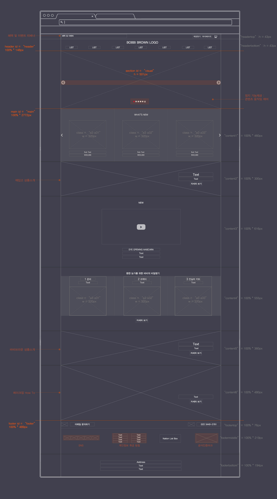

바비브라운
화장품 브랜드 ‘바비브라운’ 사이트를 반응형으로 리뉴얼 하였습니다.
다양한 사용자 환경에 대응하기 위해 크로스 브라우징과 웹접근성을 고려하였으며, 전체적인 퍼블리싱과 서브 페이지 디자인을 진행하였습니다.
바비브라운
반응형 / 웹표준 / 웹접근성 / 크로스브라우징
- 제작기간 2019.01 ~ 2019.05
- 프로젝트 개인 리뉴얼 프로젝트
- 역할 코딩 기여도100% / 디자인 기여도 50%
- 사용기술Html5 / Css3 / Javascript / Jquery
- IE 지원IE9+
As Is & To Be
문제발견과 문제해결
As Is
1. 로그인
- 로그인을 시도하고 실패했을 경우, 사용자 이탈이 생길 수 있다.
- 시각적으로 콘텐츠 정렬이나 여백 등의 정돈되지 않은 UI.
2. 메이크업 레슨(How To)
- 메이크업 과정을 보여주기보다는 완성된 이미지와 제품 이미지, 그리고 간략한 설명만 명시되어 있어 전달이 부족하다.
- 카테고리가 분리되어 있어 같은 콘텐츠인데도 중복적으로 클릭할 수 있다.
이메일 주소로 가입해 로그인 하는 시스템은 이탈 페이지 비율에 많은 영향을 준다.
이 내용은 로그인 UX 가이드에서도 볼 수 있는데, 사용자는 양식 작성이나 엄격한 규칙이 필요한 암호를 통해 새 사이트에 가입하는 것을 좋아하지 않다고 한다. 등록하는 과정에서 암호를 잊어버리면 로그인 실패가 생기는데 이것은 결국 사이트 이탈로 이어진다.
메이크업 레슨의 카테고리는 전체 보기와 각 레슨별로 리스트가 분리되어있어 같은 내용인지 인식하지 못해 모든 리스트를 사용자가 클릭할 수 있다. 정보 분리가 되어 있어 사용성에 불편함이 생긴다고 판단하였다.
To Be
1. 로그인
- 간편 로그인 시스템 도입으로 대체 등록 방법을 추가하였다.
2. 메이크업 레슨(How To)
- 이해도를 높이고 따라 하기 쉽도록 동영상 콘텐츠를 추가 제공하였다.
- 카테고리 정보를 그룹핑시켜 사용성을 높였다.
전체 상품을 노출하지 않고 각 상품의 스몰 배너를 노출해 깔끔하고 정돈된 UI를 의도하였으며, 인기 아이템 콘텐츠로 주문 선택에 도움을 주었다.
정확한 사이트의 정보를 제공해 자사 몰 신뢰도를 높이고 불편함을 해소하였으며, 평소 사은품을 따로 구매하기 원하는 사용자를 위해 사은품 판매 카테고리를 제공하였다.
회원가입 페이지로 인해 다양한 혜택을 받도록 했고, 가입하지 않고도 간편하게 주문할 수 있는 비회원 주문 시스템을 도입하였다.
Project Concept
프로젝트 컨셉 : 목표 / 사용 기술
리뉴얼 전과 다른 새로운 구조 설계를 목표로 했으며, 코딩 전 구조분석과 설계를 하였습니다. 웹표준과 접근성, 그리고 SEO를 고려해 튼튼한 코드의 반응형 사이트를 구축하였습니다.
Skill Sheet
- # Html5 - 시맨틱
- # Css2, Css3 - transform, transition 시각적 효과 추가
- # Javascript
- # Jaquery
- # 반응형 레이아웃
- # 서브페이지 디자인
Sketch
스케치
Wireframe
와이어프레임

Out Put
이미지아웃풋
Main
Outline 검사로 구조를 파악하고 접근성을 위해 키보드 사용 보장과 자동 슬라이드 이미지를 제어할 수 있는 정지기능을 제공하였다. 또한, 시각적 효과를 주기 위해 마우스 오버 시 제품 확대 기능을 추가하였다.
Tablet / Mobile : 1024 ~ 320{kind=link}
{kind=link}